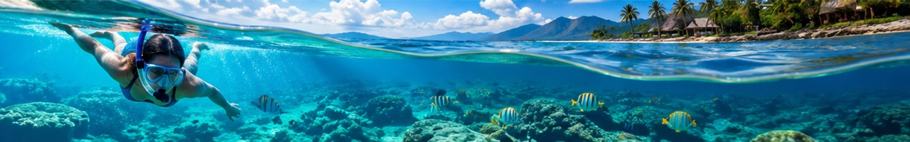
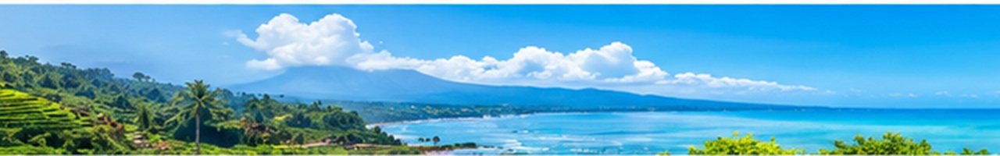

Labuan Bajo adalah kota kecil di ujung barat Pulau Flores yang menjadi gerbang utama menuju Taman Nasional Komodo. Kota ini telah berkembang pesat menjadi salah satu destinasi super prioritas Indonesia.
Taman Nasional Komodo adalah satu-satunya tempat di dunia di mana Anda bisa melihat komodo, kadal terbesar di Bumi yang telah ada sejak jutaan tahun lalu. Selain komodo, taman ini menawarkan Pantai Pink yang legendaris, diving spot kelas dunia di Manta Point, dan pemandangan sunset dari Bukit Amelia yang memukau.
Cara terbaik menikmati Labuan Bajo adalah dengan menyewa kapal liveaboard selama 2-3 hari, berlayar dari pulau ke pulau, sleeping under the stars, dan bangun di teluk yang berbeda setiap pagi.